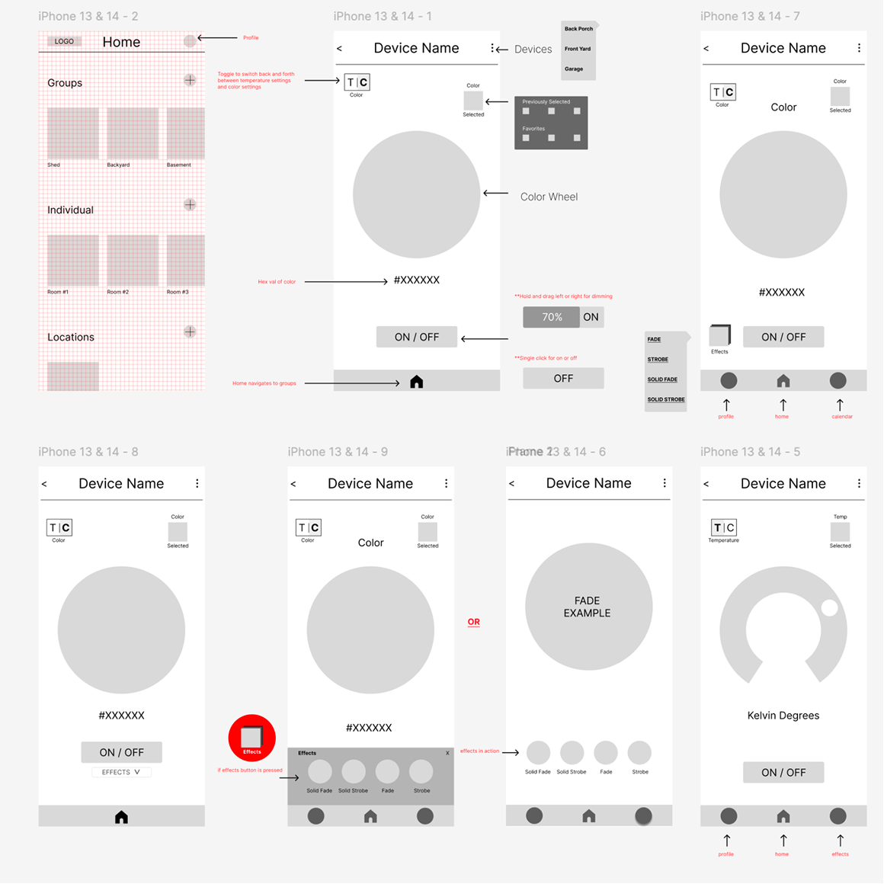
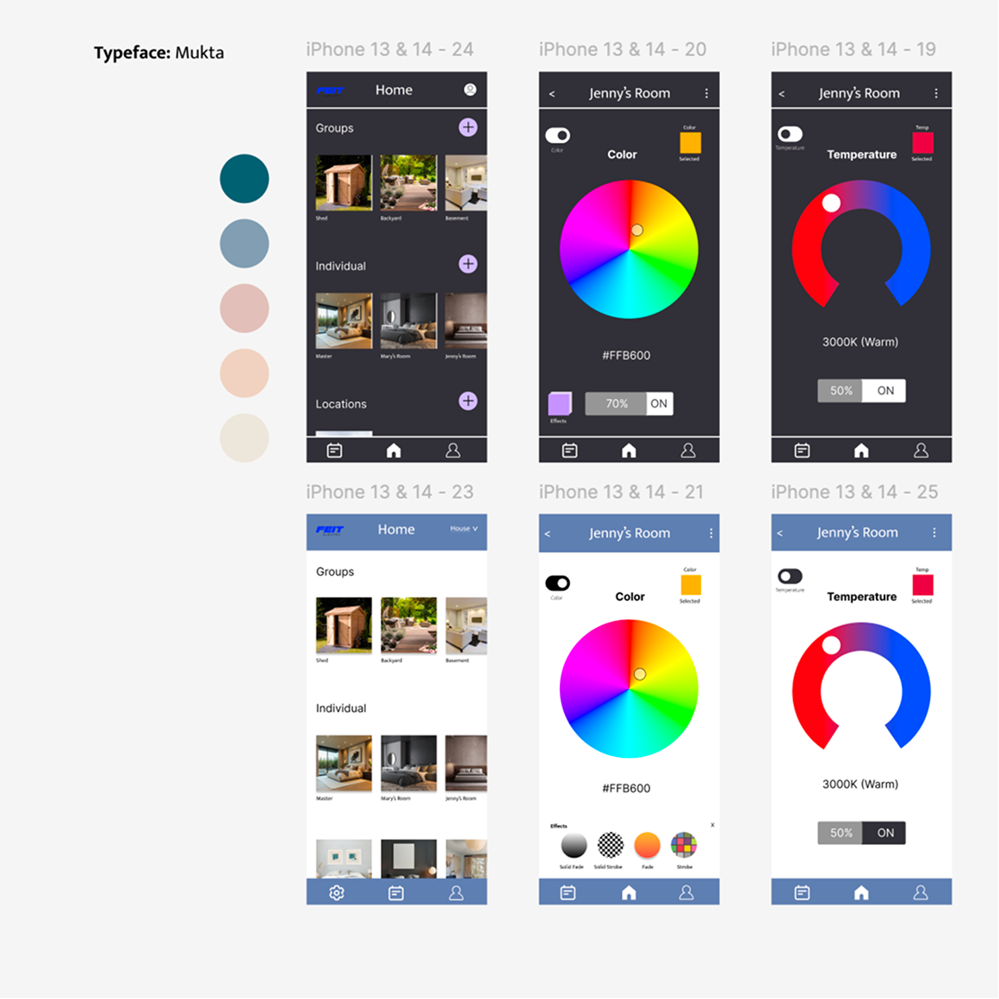

Feit Electric
Reducing Friction in a Smart Home Experience
This academic UX/UI case study examines the Feit Electric mobile app, which allows users to control smart lighting across rooms and locations. The project focuses on reducing interface complexity, consolidating navigation, and improving discoverability so users can adjust lighting quickly and intuitively without navigating through unnecessary screens.
Original - Feit's Current Experience
The original Feit Electric app distributed core lighting controls across multiple screens, resulting in a crowded bottom navigation and increased cognitive load. Common actions such as adjusting color, brightness, or effects required frequent page switching, making the experience feel fragmented and unintuitive.
My Recommended Edits

These wireframes focus on simplifying lighting controls by reducing navigation friction and visual clutter while maintaining full functionality. The design prioritizes faster interactions and a more seamless workflow within a single, flexible interface. Here are some changes I made:
- Consolidated core lighting controls into one interface to minimize navigation and visual noise.
- Combined color and temperature selection into a simple toggle, enabling quicker switching and freeing space in the bottom navigation.
- Moved previously selected colors into a contextual menu accessed via the active color, preserving functionality without persistent UI elements.
- Reintroduced the effects feature as a clearly labeled icon button to improve discoverability after removing it from bottom navigation.
- Integrated brightness controls directly into the main screen using a press-and-drag interaction to reduce page depth and support smoother workflows.
Final Details

The final designs present a simplified, task-focused lighting experience where color, temperature, brightness, and effects are accessible from a single screen. I did mock-ups in both light and dark mode using Material Design's design system to add versatility to what the new design may look like in both light and dark scenarios. Overall, I reduced the number of pages and navigation elements which resulted in a more intuitive and efficient interaction model. The home screen was restructured to better reflect how users think about their spaces. Lights are organized into Groups, Individuals, and Locations, helping users quickly find and manage lighting setups based on context rather than a flat list.
Final Thoughts
This project reinforced the importance of minimizing navigation depth and designing controls around user intent. By consolidating actions and reducing cognitive load, the redesign creates a more approachable and scalable experience for smart home users.